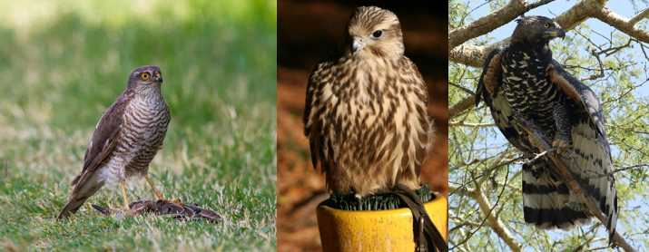

In this blog I'm going to talk about falconry, the art of hunting using one of the most powerful weapons in nature.

The history of falconry starts in the central Asia 4000 years ago. People in this age were dependent on hunting, but they only had wooden javelins and bows so they couldn't hunt prey regularly. They started stealing the prey from birds. As the days passed they needed more and more food so they decided to cooperate with eagles to hunt deer and wolfs. Hunters brought chicks from the nest and trained them to hunt the same way that their parents would in the wild. This method of hunting became more and more popular and falconry started to grow across the whole world.
In modern world falconry became more of an art then a hunting method. But in the world full of guns there are still people who prefer this traditional way of hunting. Birds specialized for hunting:

Sparrowhawk
Small birds of prey. With these birds you can hunt every type of songbird and when your bird is really well trained, you can hunt birds as large as a duck
Falcon
Medium sized birds of prey. They are used to hunt pheasant, water birds and rabbits
Crowned hawk eagle
Big eagles . With amazing power in their legs, that could brake human skull, they are amazing deer, fox, rabbit and wolf hunters
Bird breeding is the most important part of falconry in Europe because here, you can't just steal chicks from a nest like in America. The only way to own a bird of prey is to buy one. Each bird breeder has special mews where birds have minimal contact with people to help breed the perfect hunter with natural insticts. And I think it's lot of information for today's blog so we can continue next time with some other interesting facts about falconry.